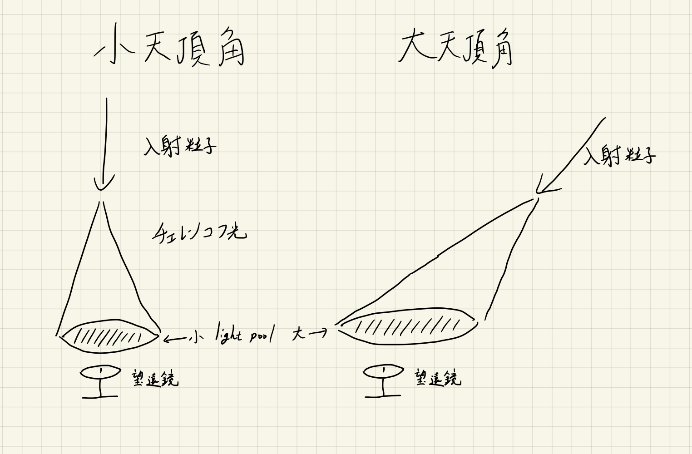

51: Brightest of All Time
Starring


Show notes
目次
0:00 いなださんの経歴
- 宇宙素粒子若手の会 YMAP
- 高エネルギーニュース(高エネルギー物理学研究者会議) の最新号に宇宙素粒子若手の会および ROOT 講習会についての記事が載っています。
- 梶田さんノーベル賞: The Nobel Prize in Physics 2015 - NobelPrize.org
- MAGIC (望遠鏡) - Wikipedia
- CTA: チェレンコフ望遠鏡アレイ - 天文学辞典
- マックス・プランク物理学研究所 - Wikipedia
- ラ・パルマ島 - Wikipedia
14:29 暗黒物質間接探索 (博士での研究)
- エクスポージャー: カメラの露光時間に相当する。どれだけ観測データを溜めるかの尺度。
- ヘスガンマ線望遠鏡 - 天文学辞典
- 天頂角: 宇宙線などの入射角度を天頂からの角度で表すため、大天頂角とは水平に近い角度を意味する。

大天頂角と小天頂角の場合のチェレンコフ光 (作図: oka)
- ベリタスガンマ線望遠鏡 - 天文学辞典
- ドワーフ: 矮小銀河 - 天文学辞典
- ICRC2023
- Geant4 - Interaxion Keywords
- CORSIKA (COsmic Ray SImulations for KAscade)
44:47 PRL 論文の内容
- Phys. Rev. Lett. 130, 061002 (2023) - Search for Gamma-Ray Spectral Lines from Dark Matter Annihilation up to 100 TeV toward the Galactic Center with MAGIC (arXiv:2212.10527)
- Cuspy halo problem - Wikipedia (コア・カスプ問題)
- ウィーノ (Wino) ：弱い相互作用を媒介する標準模型粒子 W ボソンの超対称パートナー
53:25 ポスドク先選び： FASER へ
- FASER Japan
- ALPs (Axion-Like Particles)、ダークフォトン (ヒドゥンフォトン、暗黒光子): 暗黒物質候補の未発見粒子。
【論文紹介】暗黒物質候補 Axion-like particles および Hidden photon の探索 - XMASS - T2K
- GZKカットオフ - 天文学辞典
- 【ニュース・中国】清華大学、「水木学者」計画を始動 - JSPS海外学術動向ポータルサイト
- 水木清华 - 维基百科，自由的百科全书
- LHC Run 3: CERNの大型ハドロン衝突型加速器の第3期運転は予定通り開始 - ICEPP 素粒子物理国際研究センター International Center for Elementary Particle Physics
- 加速器の休み: 日本だと夏、ヨーロッパだと冬!?
- 10: I’m sorry I died - Interaxion Podcast
カソクキセンパイは夏の加速器休止期間にツーリングに行くという話
- 10: I’m sorry I died - Interaxion Podcast
- モリオン国際会議: Rencontres de Moriond
- Phys. Rev. Lett. 131, 031801 (2023) - First Direct Observation of Collider Neutrinos with FASER at the LHC (arXiv:2303.14185
- APS の解説記事: Physics - The Dawn of Collider Neutrino Physics)
- エマルション (原子核乾板) がこれまで出て来た回 → 原子核乾板 - Interaxion Podcast
1:29:41 中国生活
1:37:04 BoAT (史上最も明るいガンマ線バースト)
- GRB 221009A - Wikipedia
- GRB: ガンマ線バースト ｰ 天文学辞典
- LHAASO
- Institute of High Energy Physics - Wikipedia
- BOATの色んな衛星の観測結果
- X線 全天Ｘ線監視装置MAXIによる、数千年に一度のガンマ線バースト GRB 221009Aの検出 - JAXA 有人宇宙技術部門
- ガンマ線 (Fermi)
- 逆オッカム: オッカムの逆刃刀 - Interaxion Keywords
- プリマコフ効果: Primakoff effect - Wikipedia
- テレスコープアレイ - 天文学辞典
- Tibet ASγ実験
- ALPACA 実験
- 第67回仁科記念賞に瀧田正人教授 - ICRR - Institute for Cosmic Ray Research University of Tokyo
1:55:00 スーパーカミオカンデによる加速されたダークマターの探索
- 論文: Phys. Rev. Lett. 130, 031802 (2023) - Search for Cosmic-Ray Boosted Sub-GeV Dark Matter Using Recoil Protons at Super-Kamiokande
- プレスリリース: 【論文紹介】ニュートリノ検出器で探索する軽いダークマター - 東京大学宇宙線研究所付属神岡宇宙素粒子研究施設
- PandaX の結果 Phys. Rev. Lett. 128, 171801 (2022) - Search for Cosmic-Ray Boosted Sub-GeV Dark Matter at the PandaX-II Experiment (arXiv:2112.08957)
1:58:28 XENON による WIMP Search
- Physical Review Letters - Accepted Paper: First dark matter search with nuclear recoils from the XENONnT experiment (arXiv:2303.14729)
- 【研究成果】XENONnT実験による最初のWIMP暗黒物質探索の結果 - 名古屋大学 素粒子宇宙起源研究所（KMI）
- ニュートリノフロア - Interaxion Keywords
- 「素粒子実験における正規軍とゲリラ」
お知らせ
- ニムニムスタンプ
- 使用 BGM について
【動画やポッドキャストのBGMをお探しの方へ】
サイトウが大量に制作したトラックの中から厳選された作品が、国内最大級の音源販売サイト Audiostock で販売開始されました。
単品購入 or 定額制を選択可。
ぜひご活用ください！！https://t.co/7dSi0Mw6kG— サイトウナヲキ (@sai_enlightened) June 29, 2022
- 出演して頂ける方や感想などをお待ちしております。 #interaxion
おたよりコーナーを作りました。質問、感想、要望などお待ちしております。https://t.co/rz0mlRKZU3
— Interaxion Podcast (@interaxion) January 12, 2021